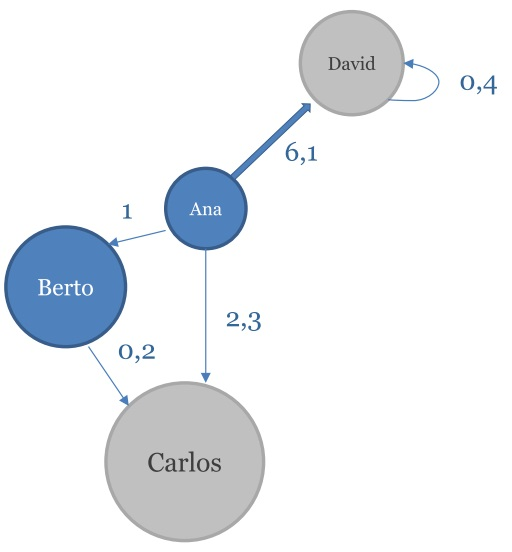

4.2 Análisis de grafos
4.2.1 Introducción
En su forma más sencilla, un grafo (o red) se puede representar como una colección de puntos (denominados nodos o vértices) conectados por medio de líneas (denominadas enlaces o arcos).
El interés por el análisis de grafos surge del hecho de que existen multitud de problemas en distintas áreas (física, biología, ciencias sociales, ciencias de la computación, etc.) que se pueden modelar matemáticamente por medio de grafos. Algunos ejemplos de grafos que aparecen en nuestra vida cotidiana incluyen:
Internet (nodos - computadores; arcos - líneas de comunicación).
La web (nodos - páginas web; arcos - hiperenlaces).
Las redes sociales (nodos - personas; enlaces - relaciones entre ellas).
La red de carreteras (nodos - ciudades; arcos - vías que las conectan).
La red de metro (nodos - estaciones; arcos - vías que las conectan).
Dadas las múltiples aplicaciones de los grafos como modelo matemático, disponer de técnicas y herramientas que permitan analizar estos grafos resulta de gran utilidad. Por ejemplo, podríamos estar interesados en analizar los grafos presentados anteriormente para aplicaciones tales como:
Encontrar enlaces sensibles en la red de computadores, que en caso de caídas provoquen la desconexión de múltiples equipos.
Hacer un ranking de páginas web para seleccionar las más relevantes (por ejemplo, las más enlazadas desde otras).
Entender cómo se podría propagar una enfermedad analizando la estructura de contactos de una red social.
Encontrar la ruta más corta entre dos ciudades en la red de carreteras o entre dos estaciones en la red de metro.
El objetivo de este apartado es aprender a crear, manipular y analizar grafos utilizando R. Para ello nos apoyaremos en el paquete igraph, un proyecto de código libre al que han contribuido múltiples desarrolladores, entre los que destaca Gábor Csárdi, que actualmente trabaja en el Departamento de Estadística de la Universidad de Harvard.
Comenzaremos por instalar el paquete, siguiendo el procedimiento habitual:
install.packages("igraph", dependencies=T) Una vez instalado el paquete, cargaremos la librería en el entorno de R, ejecutando:
library(igraph) Hecho esto, estamos en condiciones de poder empezar a usar las funcionalidades ofrecidas por igraph.
4.2.2 Primeros pasos con igraph
El primer paso para trabajar con esta librería suele ser definir el grafo sobre el que vamos a operar. El modelo de datos de igraph da soporte a dos tipos fundamentales de grafos:
Grafos dirigidos: Son aquellos en los que los arcos que unen dos vértices tienen un solo sentido. Un ejemplo de grafo dirigido serían los enlaces en la web, que nos llevan en una sola dirección, de la página de origen a la de destino del enlace.
Grafos no dirigidos: Son aquellos en los que los arcos que unen dos vértices no tienen un único sentido y se pueden recorrer en ambos. Un ejemplo serían las redes de comunicaciones, que son usualmente bidireccionales (la información puede fluir en los dos sentidos).
La forma más sencilla de crear un grafo, es llamando a la función graph y proporcionando directamente desde el terminal la lista de arcos que constituyen el grafo. Por ejemplo, ejecutando en la consola la expresión:
g <- graph( c(1,2, 2,3, 1,3, 1,4, 4,4) ) Estaríamos creando un grafo con cuatro vértices V={1,2,3,4} y cinco arcos E={(1,2),(2,3),(1,3),(1,4),(4,4)}. Internamente igraph utiliza identificadores enteros y secuenciales para referirse a los vértices (en el caso de R, el primer identificador debe ser el 1). Por eso, a la hora de crear el grafo, nosotros hemos seguido este convenio. Nótese que en la expresión anterior se han introducido espacios en blanco para que se vean los pares que constituyen cada arco. Obviamente estos espacios no son obligatorios.
Una vez el grafo ha sido construido, podemos obtener un listado de los vértices y arcos que lo constituyen utilizando las funciones V (para vértices -vertex-) y E (para arcos - edges-):
V(g)
# + 4/4 vertices:
# [1] 1 2 3 4
E(g)
# + 5/5 edges:
# [1] 1->2 2->3 1->3 1->4 4->4 Puede verse que el grafo resultante es un grafo dirigido (indicado con -> en los arcos). Este es el comportamiento por defecto de la función graph. Podríamos especificar que el grafo fuese no dirigido mediante el parámetro directed:
g <- graph( c(1,2,2,3,1,3,1,4,4,4), directed=FALSE)
E(g)
# + 5/5 edges:
# [1] 1--2 2--3 1--3 1--4 4--4 También es posible añadir atributos a los vértices y arcos de un grafo. Estos atributos tienen múltiples aplicaciones, por ejemplo, a la hora de representar el grafo. Los atributos más comúnmente utilizados son:
El atributo name: permite añadir etiquetas textuales a los vértices y arcos, para facilitar su interpretación.
El atributo weight que se utiliza para asignar pesos numéricos a los vértices y a los arcos. Esto es útil por ejemplo para poder representar grafos ponderados (weighted graphs) en los que a los arcos se etiquetan con un peso (usualmente un número real). Este peso sirve, por ejemplo, para representar el coste de recorrer un enlace (p.ej.: la distancia en kilómetros al modelar carreteras) o su capacidad (útil por ejemplo al modelar redes de comunicaciones).
El atributo color que permite especificar el color con el que se representarán gráficamente vértices y arcos.
Podemos ver a continuación un ejemplo de uso de estos atributos:
g <- graph( c(1,2,2,3,1,3,1,4,4,4))
V(g)$name<-c("Ana","Berto","Carlos","David")
V(g)$weight<-c(4.0,6.2,7.1,3.1)
V(g)$color<-c("green","green","yellow","yellow")
E(g)$weight<-c(1.0, 0.2, 2.3, 6.1, 0.4)
E(g)$name<-E(g)$weight
E(g)$color<-rep("red",5)
plot(g, edge.width=E(g)$weight, edge.label=E(g)$name,
vertex.size=V(g)$weight*10, vertex.label=V(g)$name) Donde se puede ver el uso de la función plot a la hora de representar gráficamente el grafo, obteniéndose el resultado mostrado en la siguiente Figura.

Figura 2. Representación gráfica de un grafo.
Nótese que en la llamada a plot hemos configurado el tamaño de los vértices (vertex.size) el ancho de los arcos (edge.width), las etiquetas de los vértices (vertex.label) y las etiquetas de los arcos (edge.label).
Información más detallada sobre la presentación de grafos con igraph puede obtenerse a través de la ayuda de R ejecutando la expresión:
?igraph.plotting4.2.3 Importando/exportando grafos desde/a fichero
Crear un grafo directamente a través de la consola de R, como hemos hecho en todos los ejemplos anteriores, es un mecanismo efectivo cuando trabajamos con grafos pequeños.
Sin embargo, cuando el número de vértices y arcos en el grafo es elevado, resulta más habitual que tengamos la información en un fichero y que carguemos los datos del mismo utilizando la función read.graph de igraph. Esta función permite importar datos desde ficheros de distintos formatos, dos de los más utilizados debido a su sencillez son:
- Lista de arcos (edge list). Básicamente se trata de un fichero de texto en el que cada línea representa un arco del grafo, descrito por medio de dos identificadores numéricos separados por un espacio en blanco o tabulador. Por ejemplo, si tenemos un fichero /Users/user/grafo.elist.
0 1
0 2
1 2
0 3
3 3 Podemos crear un grafo a partir de él con ejecutando la expresión:
g2<-read.graph("/Users/user/grafo.elist", format="edgelist",
directed=T) Un pequeño aspecto a considerar cuando trabajamos con este tipo de ficheros es que en este caso igraph espera que el primer identificador de vértice en el fichero sea un 0 y añadirá automáticamente un 1 a todos los identificadores, para cumplir con la restricción de que el primero sea el 1.
- LGL ncol. De nuevo consiste en un fichero de texto en el que cada línea representa un arco, con dos etiquetas textuales separadas por espacio en blanco y un tercer elemento opcional que representa el peso asociado al arco. Las etiquetas textuales se cargarán en el atributo name de los vértices, mientras que el valor de la última columna se incluirá en el atributo weight de los arcos y la librería asignará automáticamente un identificador entero a cada vértice. Por ejemplo, si tenemos un fichero /Users/user/grafo.ncol
Ana Berto -0.3
Ana Carlos 2.4
Berto Carlos 9.2
Ana David -2.45
David David Podemos crear un grafo a partir de él con ejecutando la expresión:
g3<-read.graph("/Users/user/grafo.ncol", format="ncol", directed=T) Además de importar grafos desde fichero, también es posible exportarlos, utilizando la función write.graph a la que hay que indicarle el grafo a almacenar, la ruta del fichero destino y el formato en el que se desea representar el fichero. Por ejemplo:
write.graph(g2, "/Users/user/output.ncol", format="ncol") 4.2.4 Análisis de grafos con igraph
Tras haber introducido las funcionalidades básicas ofrecidas por el paquete igraph, veremos a continuación cómo llevar a cabo algunas tareas de análisis de grafos de uso común. Para ello, trabajaremos con el grafo que representa la estructura de las líneas de metro de Madrid.
Descarga a través del aula virtual el fichero con los datos del grafo para realizar el ejemplo:
metro.ncolSi editáis el fichero, veréis que utiliza el formato LGL ncol, que tratamos con anterioridad, así que simplemente podéis cargarlo en vuestro entorno de R haciendo (reemplazando adecuadamente /path/to/ por la ruta en vuestro sistema):
metro<-read.graph("/path/to/metro.ncol",
format="ncol",
directed=FALSE) 4.2.5 Información básica de grafos
Veremos a continuación una serie de ejemplos que muestran algunas de las funciones más utilizadas a la hora de obtener información básica sobre la estructura de un grafo. Más información sobre cada una de estas funciones individuales se puede obtener a través de la ayuda de R.
- Obtener el tamaño de un grafo (número de vértices y arcos):
length(V(metro))
# [1] 275
length(E(metro))
# [1] 314 - Saber si el grafo es conexo (existe al menos una ruta entre cualquiera dos nodos) o no:
is_connected(metro)
# [1] TRUE - Listar los vecinos de un vértice dado (por ejemplo, la parada de Plaza de España) y obtener sus nombres:
vecinos<-neighbors(metro, "Plaza_de_España")
V(metro)[vecinos]$name
# [1] "Tribunal" "Callao" "Ventura_Rodríguez" "Príncipe_Pío" - Obtener el diámetro del grafo (distancia máxima entre dos de sus vértices):
diameter(metro)
# [1] 44 - Medir la longitud media de las rutas que conectan los nodos dos a dos:
mean_distance(metro)
# [1] 15.61186 Consultar la densidad del grafo, que mide la relación entre el número de arcos que existen y el número total de los que podrían existir si todos los nodos estuviesen directamente conectados dos a dos:
edge_density(metro)
# [1] 0.008334439 Nótese que el grafo de ejemplo que nosotros estamos utilizando es un grafo no dirigido. Cuando el grafo es dirigido, puede ser necesario indicarles a algunas de las funciones anteriores (como por ejemplo a neighbors) con qué enlaces queremos operar.
Es por eso por lo que un parámetro común en muchas de las funciones de igraph es el parámetro mode, que puede tomar tres valores:
all: Si queremos que se tengan en cuenta todos los arcos
in: Para considerar solo los incidentes en el nodo
out: Para los que salen del nodo.
4.2.6 Medidas de centralidad
Las medidas de centralidad son un indicador de la importancia relativa de un nodo dentro de un grafo en base a la posición que este nodo ocupa dentro de la red. Normalmente, cuanto mayor sea la centralidad del nodo, más importante será este.
Existen cuatro métricas que se utilizan muy habitualmente a la hora de estimar la centralidad de los vértices de un grafo:
- Cercanía (closeness): dado un vértice, se calcula la distancia más corta desde ese vértice a todos los otros nodos de la red. A continuación se obtiene la media de esas distancias. La inversa de esa media es la cercanía. Por tanto, cuanto más pequeño es ese valor más alejado de otros nodos está el vértice y menor es su importancia. La cercanía se calcula en R con:
closeness(metro, "Plaza_de_España")
# Plaza_de_España
# 0.0003706449 - Intermediación (betweenness): su objetivo es estimar cuántas veces un vértice aparece en el camino más corto que une otros dos vértices cualesquiera del grafo. Por tanto, cuanto mayor sea el betweenness, más importante será el nodo, puesto que más caminos pasarán a través de él. En igraph la intermediación de un nodo se calcula como:
betweenness(metro, "Plaza_de_España")
# Plaza_de_España
# 12054.46 - Centralidad de grado (degree centrality): consiste simplemente en medir cuántos enlaces posee un nodo. Cuanto mayor sea este número, mejor conectado (y por tanto más importante) será el vértice.
En igraph el grado de los nodos de un grafo se puede obtener con:
degree(metro, "Plaza_de_España")
# Plaza_de_España
# 4 - PageRank: al igual que la centralidad de grado, tiene en cuenta el número de enlaces de un vértice, pero a diferencia de esta, no considera igualmente relevantes a todos los enlaces, sino que da más importancia a los enlaces con nodos que a su vez están bien conectados. Cuanto mayor es el valor de PageRank de un nodo, más relevante es. Se calcula en igraph con:
page_rank(metro, vid="Plaza_de_España")$vector
# Plaza_de_España
# 0.004631253 4.2.7 Camino más corto
Un problema que surge habitualmente al analizar grafos es encontrar el camino de menor coste entre dos nodos. Para resolver este problema, el paquete igraph implementa la función shortest_paths.
Por defecto, shortest_paths utiliza el valor del atributo weight de cada arco para determinar su coste. Cuando un grafo no tiene atributo weight se toma como coste de un camino su número de saltos, con lo que esta función se puede utilizar también para calcular el camino más corto.
Por ejemplo, podemos encontrar la ruta más corta entre las estaciones de Callao y Batán ejecutando en la consola de R:
path<-unlist(shortest_paths(metro, from="Callao", to="Batán")$vpath)
V(metro)[path]$name
# [1] "Callao" "Plaza_de_España" "Príncipe_Pío" "Lago" "Batán"
# datos.